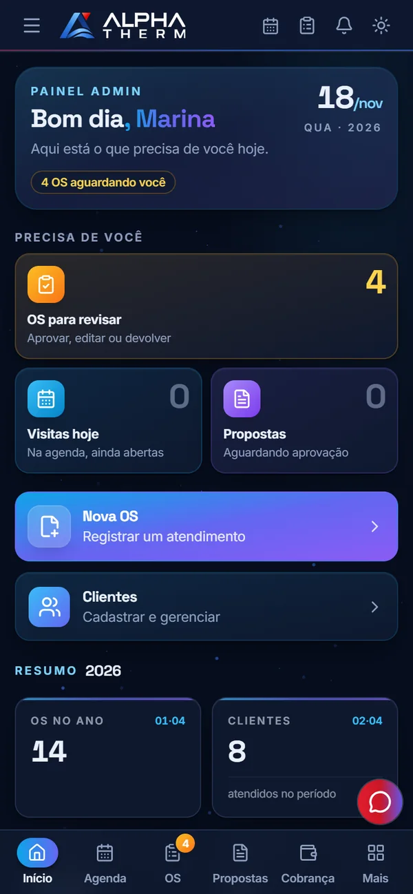

I build the software a whole company runs on.
Eu construo o software que faz uma empresa inteira rodar.
Full-stack developer from São Luís, Brazil. I designed, built and maintain four production systems, including an ERP used every day by finance, HR, sales, field teams and the board.
Desenvolvedor full-stack de São Luís. Projetei, construí e mantenho quatro sistemas em produção, incluindo um ERP usado todo dia por financeiro, RH, comercial, equipes de campo e diretoria.
Four systems, all in production.
Quatro sistemas, todos em produção.
Real software used by real people every day, not demos. Click any project to read the full case study.
Software de verdade, usado todo dia por pessoas reais, não demos. Clique num projeto para ler o estudo de caso completo.
Alphatherm ERP
A company-wide ERP with 15+ modules: finance, payroll, sales, inventory, construction projects and more.
ERP corporativo com 15+ módulos: financeiro, folha, comercial, estoque, obras e mais.
Read case studyLer estudo de caso →
Alphatherm Atendimento
Offline-first PWA for field technicians: service orders, photos, signatures and PDF reports.
PWA offline-first para técnicos de campo: ordens de serviço, fotos, assinatura e relatório em PDF.
Read case studyLer estudo de caso →
Alphaneo
Self-updating bot that bulk-closes work orders in a third-party web system.
Robô que se atualiza sozinho e dá baixa em lote em ordens de serviço num sistema web de terceiros.
Read case studyLer estudo de caso →
Alphatasker
Bot that creates dozens of work orders in one run, with scheduling rules.
Robô que abre dezenas de ordens de serviço de uma vez, com regras de horário.
Read case studyLer estudo de caso →
Tech I build with
Tecnologias que uso
From one bot to a whole ERP.
De um robô a um ERP inteiro.
First automation: Alphaneo
Primeira automação: Alphaneo
A Python bot that ends a daily manual chore: closing work orders one by one in a web system.
Um robô em Python que acaba com uma tarefa manual diária: dar baixa em ordens de serviço uma a uma num sistema web.
Alphatasker and Alphatherm Atendimento
Alphatasker e Alphatherm Atendimento
A second bot for bulk order creation, and an offline-first PWA that replaced forms, spreadsheets and Word for the field team.
Um segundo robô para abrir ordens em lote, e um PWA offline-first que substituiu formulários, planilhas e Word para a equipe de campo.
The ERP starts
Começa o ERP
Inventory first, then HR and payroll, then finance. The field app is merged in as a module.
Primeiro o estoque, depois RH e folha, depois o financeiro. O app de campo vira um módulo.
15+ modules, used by the whole company
15+ módulos, usados pela empresa inteira
Finance, tax, sales, projects, maintenance and meetings, with 4,300+ commits and still shipping every week.
Financeiro, fiscal, comercial, obras, manutenção e reuniões, com 4.300+ commits e entregas toda semana.
The developer who lives the business problem.
O desenvolvedor que vive o problema de negócio.
I work at an HVAC engineering group in São Luís, Brazil. When our operation hit problems that software could solve, I didn't wait for a vendor. I built the tools myself and put them in production.
Trabalho num grupo de engenharia de climatização em São Luís. Quando a operação esbarrou em problemas que software resolveria, não esperei um fornecedor: construí as ferramentas e coloquei em produção.
I don't receive a finished spec. I live the problem, model the data, write the code and support the people who use it every day.
Eu não recebo um requisito pronto. Eu vivo o problema, modelo os dados, escrevo o código e dou suporte a quem usa todo dia.
- ◆Product & UX from a real-world problemProduto e UX a partir de um problema real
- ◆Database design, SQL & Row-Level SecurityModelagem de banco, SQL e Row-Level Security
- ◆Frontend: React, TypeScript, PWAFront-end: React, TypeScript, PWA
- ◆Serverless APIs & integrationsAPIs serverless e integrações
- ◆Automation & RPA with PythonAutomação e RPA com Python
- ◆Testing, deploy & production supportTestes, deploy e suporte em produção
Let's build something.
Vamos construir algo.
Open to full-stack roles (remote-friendly) and freelance projects. I reply fast.
Disponível para vagas full-stack (remoto) e projetos freelance. Respondo rápido.